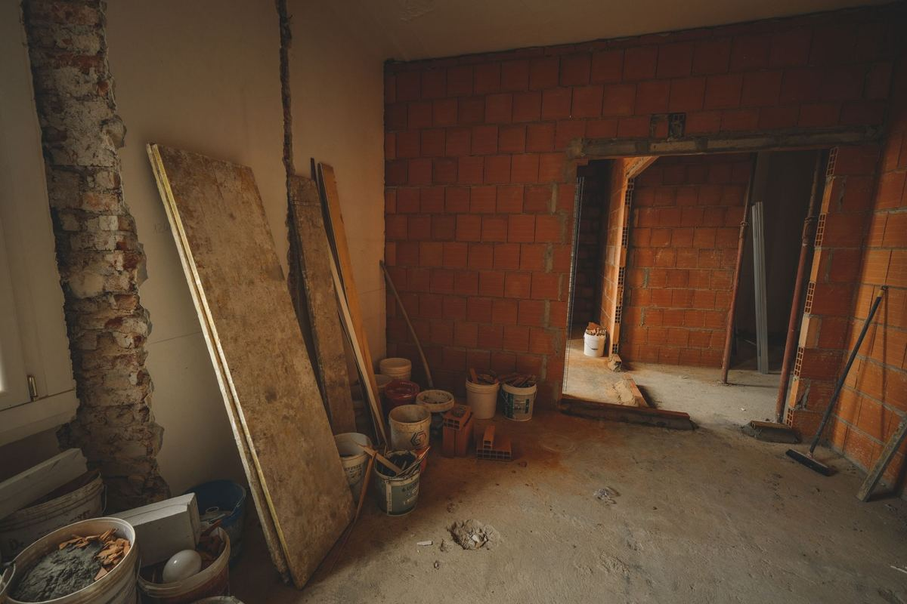

A finished remodel leaves four piles, not one. Clean wood and metal a recycler wants. Mixed debris that recycles poorly and goes to a permitted disposal site. Cabinets, doors, and fixtures somebody could still use. And a small hazardous pile that no hauler should touch. We take the first three. The fourth goes to your city's collection program.

Most people do not find this out until the contractor's last day, when the work is done and the leftovers are still sitting in the garage, the side yard, or the middle of what used to be a kitchen.
The four piles a remodel actually produces
Walk any finished job in Plano or Richardson and the debris sorts itself into the same four groups every time.
- Clean wood and metal. Framing offcuts, trim, old ductwork, copper, a cast iron tub, the aluminum from a torn-out window frame. These have real recycling routes.
- Mixed debris. Drywall with tape and paint on it, carpet and pad, laminate, insulation, broken tile, torn-off cabinet backing. Once materials get married together they usually stop being recyclable.
- Still usable. Cabinet runs pulled out intact, interior doors, light fixtures, a working vanity, unopened boxes of flooring.
- Hazardous. Half-used paint and stain, thinner, adhesive, caulk tubes, and anything that turns up in an older house that needs a professional rather than a hauler.
The EPA has a plain overview of where construction and demolition material goes and why the clean piles matter at construction and demolition materials. It is worth two minutes if you are about to start a job rather than finish one.
What we take off a remodel site
Almost all of the first three piles. Old cabinets and countertops, bathtubs, shower pans, vanities, toilets, sinks, torn-out flooring, carpet and pad, drywall scrap, trim, doors, windows, siding, fencing, deck boards, scrap lumber, and the pile of empty boxes and packaging that a remodel generates in numbers nobody expects. A torn-out fence or deck on its own is a job of its own size, covered in fence and deck teardown debris. Debris from water rather than a remodel is a different sequence, covered in what a slab leak leaves behind. If the only thing left is the old floor, see old carpet and pad after a new floor goes in.
We also take the stuff that got displaced rather than demolished. A remodel usually pushes a garage full of furniture, boxes, and appliances into a corner and then leaves them there. That is the same job as a garage cleanout, and it usually happens on the same visit.
Dense material is the one honest exception across this whole industry. Concrete, brick, dirt, tile, and stone are handled differently from a normal load, so tell us about it when you call rather than after we arrive. It is not a problem, it just changes how the job runs. The full picture is on construction debris.
Tell us what the house was built in. An older home changes what a remodel leaves behind, and it is the single most useful sentence you can give a hauler on the phone.
A nearly new house is the other end of that. Trim offcuts, cabinet boxes and leftover tile from the original build often sit in the garage for years before anyone deals with them, which is the job we see most on our page about builder and remodel leftovers in Prosper. If you just closed on one, here is what to do with the boxes and builder leftovers.
What we will not take, and where it goes instead
Paint, stain, thinner, solvents, adhesives, pool chemicals, pesticides, motor oil, and propane are household hazardous waste. We do not take them, no crew should carry them, and there is a free program for them where you live. Plano residents use household chemical collection. McKinney runs household hazardous waste and e-waste collection. Every city in the area has an equivalent, and we will point you at yours.
Two more belong in the not-us column, and they matter more in older North Texas housing stock than people expect.
Paint in a home built before 1978 may contain lead, and the EPA sets rules for who may disturb it and how, which is worth reading at the Lead Renovation, Repair and Painting Program. Asbestos turns up in old floor tile, mastic, popcorn ceilings, and pipe insulation, and the EPA covers what to do and who to call at protect your family from exposures to asbestos. Both need an abatement professional, not a hauling crew. We are haulers, and we will not pretend otherwise.
If you want the complete line between the two columns, what we will and will not take is the whole list in one place.
The usable pile might not need us at all
This is the part where we talk ourselves out of a little work.
Cabinet runs that came out in one piece, solid interior doors, working light fixtures, a vanity in decent shape, leftover tile still in the box. A Habitat for Humanity ReStore takes building materials, cabinets, fixtures, and appliances, and each store publishes its own accepted list and its own drop-off or pickup rules. If your usable pile is genuinely good and you have a truck and a free Saturday, that route costs you nothing.
We would rather tell you that and lose the small job than take money you did not have to spend. When you would rather not spend the Saturday, the usable items ride with us and go to local donation partners instead of a landfill load. Where your junk goes after we haul it walks through how a load gets sorted after it leaves your driveway. If the work has not started yet and the room still has to be emptied first, clearing rooms before foundation or plumbing work covers that half of it.
Garage fixtures land in the same category as remodel debris once they come off the wall. What that job looks like is in garage shelving and workbench removal.
What your city will and will not collect
Worth checking before you book anyone. Most cities around here run a bulky waste program for large household items, and most of them draw a hard line at renovation debris, because remodel material is a different category from a broken recliner.
Plano publishes its residential rules at bulky waste collection, including a separate paid option for loads that fall outside the normal service. Read the accepted list before you stack anything at a curb. A pile that the city declines is a pile that sits in front of your house for another two weeks, and in most HOA neighborhoods that is a letter.
How the pickup actually runs
You point, we carry, we sweep. A crew looks at what is there, gives you a firm number before anything is lifted, and the number does not move once the work starts. Disposal is included in it, so the quote is the bill.
Our own people do the carrying, not gig labor hired off an app that morning, which is why we are comfortable working inside a house that is mid-project with finished floors and fresh paint on the walls.
We run pickups seven days a week across Plano, Allen, Frisco, McKinney, Richardson, Little Elm, Prosper, The Colony, Wylie, and Fairview. Call before noon and same afternoon is typical, though typical is the honest word rather than guaranteed, since access and job size are real variables. Tell us what you have and we will quote it before we load anything.
Frequently asked questions
Do I need to have the debris in one pile before you get there?
No. A stacked pile is faster, but we do the carrying either way. If it is spread across a garage, a side yard, and two rooms, tell us that when you call so we send the right size crew.
Can you come while the contractor is still working?
Yes, and mid-job pickups are common on longer remodels. Some people clear the debris in stages so the site stays workable instead of letting it all pile up until the last day.
What about the concrete from a torn-out patio?
Concrete, brick, stone, tile, and dirt are handled differently from a normal load. Mention it on the phone and we will tell you how that job runs before anyone shows up.
Will you take the leftover paint cans?
No. Paint, stain, thinner, and solvents are household hazardous waste and go to your city's collection program, which is free for residents. We will point you at the right one for your address.
My contractor said hauling was included. Was it?
Ask them directly, in writing, and ask what is excluded. Some contracts cover debris created by the work and exclude anything that was already in the room. That gap is where most leftover piles come from.
If a remodel is finished and the leftovers are still sitting there, the rest of what we handle is on the services page. There is no rush on our end.